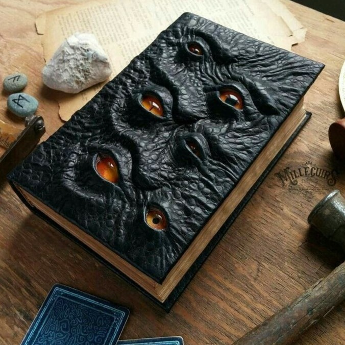
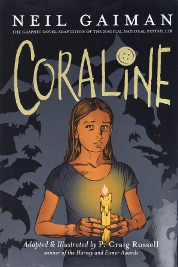
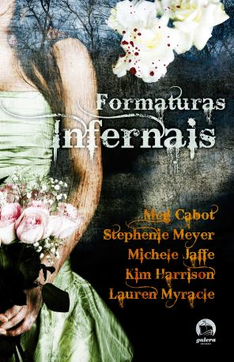
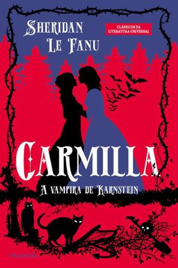

Livros para Ler no mês de Outubro
Começamos um dos melhores meses do ano —obviamente depois do mês do carnaval— e com isso estou trazendo recomendações horripilantes, ou não, para vocês lerem no mês do nosso “halloween”. Bom já digo logo que teremos todos os tipo de livros, já que sou extremamente eclética.
Coraline
Então começamos com Neil Gaiman. Não poderia deixar passar: Halloween sem o infantil mais sinistro de todos os tempos não existe! Em Coraline, Neil Gaiman nos apresenta um mundo incrível e sombrio. Coraline é uma garotinha que descobre uma porta misteriosa em sua nova casa e então, entediada e curiosa, resolve explorar. Assim encontra um mundo paralelo em que as pessoas têm botões no lugar dos olhos e a sua Outra Mãe quer mantê-la consigo neste mundo. É um livro para ler de uma vez e sentir aquele arrepio na nuca com o horripilante da coisa. Mas Gaiman não é do tipo horror. Ele segue uma linha de fantasia sinistra, o que pode ser mais confortável pra quem é mais sensível (ou covarde, sendo explícita).
- Leia também:Historiaa de Terror para Crianças Estranhas
- Leia também:O Livro do Cemitério
Formaturas Infernais
Eu falei que ia indicar livros para todo mundo, não é? Então trago Formaturas
Infernais: uma coletânea de cinco contos de autoras influentes no gênero juvenil. Entre elas, temos
Meg
Cabot (Diário da Princesa, A Mediadora – que também é uma boa para ler no Halloween) e Stephenie
Meyer
(Crepúsculo). Os contos são sobre adolescentes na noite do baile de formatura enfrentando coisas
sobrenaturais sinistras.
O conto “O buquê”, da Lauren Myracle, foi marcante na minha adolescência. É uma versão muito bem
trabalhada do famoso A Pata do Macaco (W. W. Jacobs), com uma cena de arrepiar – até hoje! Então,
para um terror mais leve, esse é o livro!
- Leia também:Academia de Vampiros
- Leia também:Pata do Macaco
- Leia também:A Mediadora
Carmilla
Carmilla é outro clássico da literatura inglesa. É uma novela gótica de Joseph Sheridan Le Fanu e conta a história da primeira vampira da literatura, e também cria a ideia de vampira lésbica. Quem narra a história é Laura, uma jovem da Estíria (uma região da Áustria) que vive isolada em um castelo com o pai. Foi publicado em capítulos em uma revista entre 1971 e 1972. Na história, Carmilla fica hospedada no castelo de Laura e as duas se aproximam. E enquanto Laura relata seus sentimentos, coisas estranhas começam a acontecer pelo castelo… Existem diversas adaptações, mas uma versão modernizada que me introduziu à história foi a web-série Carmilla da KindaTV. Ela tem legenda em português e cada temporada não passa de três horas. Vale a pena!
- Leia também:Venha Para o Inferno, Lisa